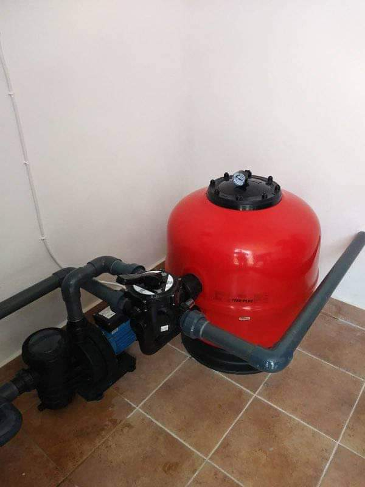
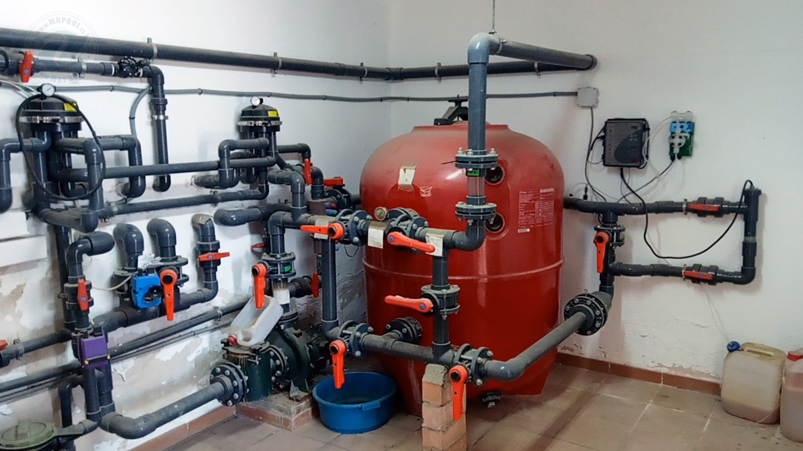
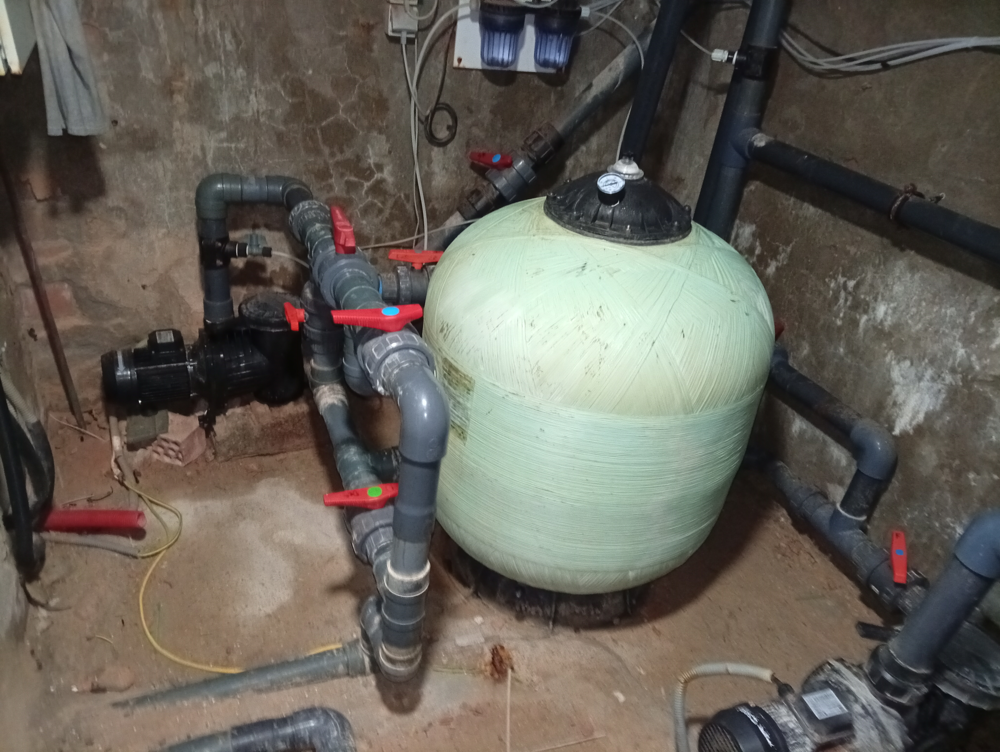
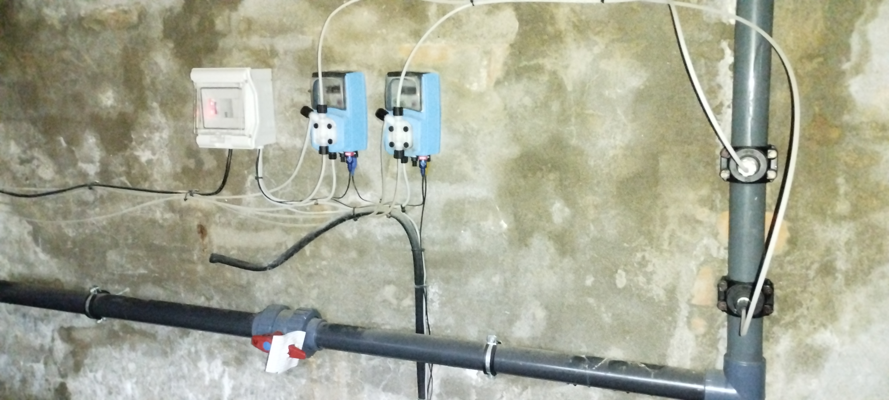

Bombas de piscina
Instalación y sustitución de bombas, valorando su compatibilidad con el filtro y el circuito existente.
MRPOOL · EQUIPAMIENTO
Instalación y renovación de bombas, filtros y circuitos de depuración en Arcos y Cádiz. Estudiamos tu piscina para adaptar el equipo y facilitar su mantenimiento.
Consultar mi instalación ↗
CIRCULACIÓN Y FILTRACIÓN
La bomba hace circular el agua por el circuito y el filtro retiene partículas de suciedad. Su elección debe tener en cuenta el volumen de la piscina, el uso y las características de las tuberías.
En MRPOOL valoramos el conjunto de la instalación: bomba, filtro, válvulas y conexiones. Tanto en una instalación nueva como en una renovación, buscamos una disposición que permita acceder a los equipos para sus revisiones.
INSTALACIÓN Y RENOVACIÓN
Instalación y sustitución de bombas, valorando su compatibilidad con el filtro y el circuito existente.
Revisión del equipo de filtración, sus conexiones y los elementos que permiten realizar las operaciones de mantenimiento.
Adaptación de conducciones y llaves para integrar los equipos y facilitar el acceso a la instalación.
FOTOGRAFÍAS DE INSTALACIONES
Cada piscina tiene una distribución y unas necesidades diferentes. Estas imágenes muestran distintas instalaciones; no corresponden a una secuencia de antes y después.



RENOVAR CON CRITERIO
Con el paso del tiempo, los equipos y las conducciones pueden necesitar una revisión. Valoramos qué elementos se pueden conservar y cuáles conviene reparar o sustituir.
Si notas ruidos nuevos, pérdida de caudal o fugas, cuéntanos qué ocurre y envíanos fotografías. La causa debe comprobarse en la instalación antes de decidir el cambio de un equipo.
La filtración se complementa con la desinfección y el control del pH. Puedes conocer más en nuestra página de cloración salina para piscinas.
PREGUNTAS HABITUALES
Se puede valorar, comprobando que la nueva bomba sea compatible con el filtro, las tuberías y las necesidades de la piscina.
Depende del estado y de la adecuación de los componentes. Revisamos el conjunto para proponer qué conservar y qué renovar.
La localidad, las medidas aproximadas de la piscina y fotografías de la bomba, el filtro y las conexiones. Una imagen de las placas de los equipos también ayuda a identificar sus características.
ARCOS · CÁDIZ
¿Vas a instalar una depuradora o renovar tu equipo actual? Envíanos la localidad, las medidas de la piscina y fotos de la instalación para estudiar tu caso.
Consultar por WhatsApp ↗